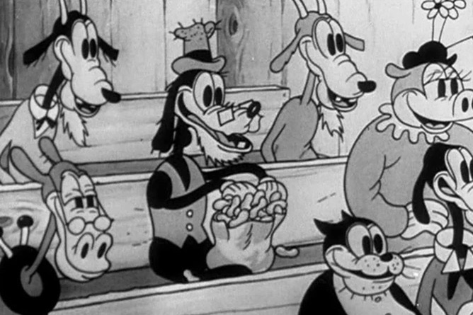
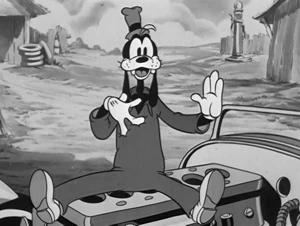
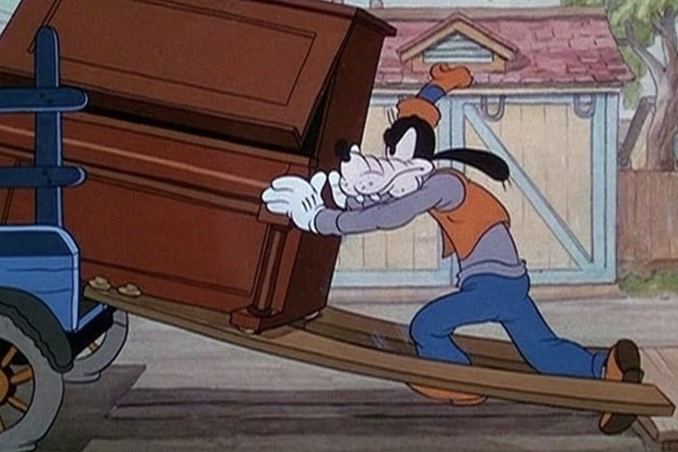
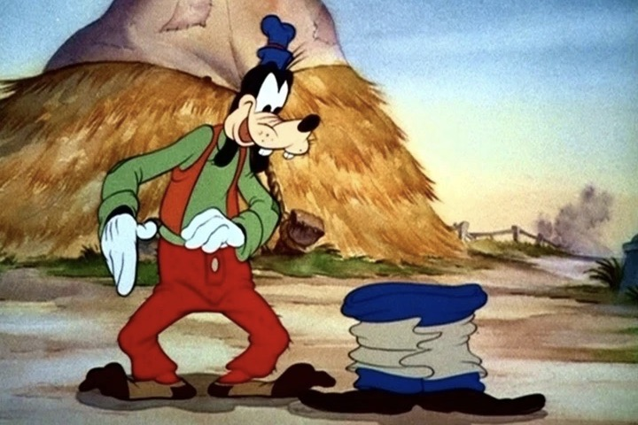
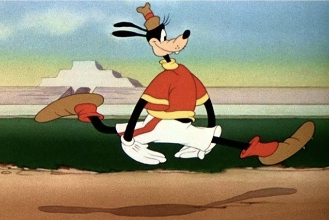
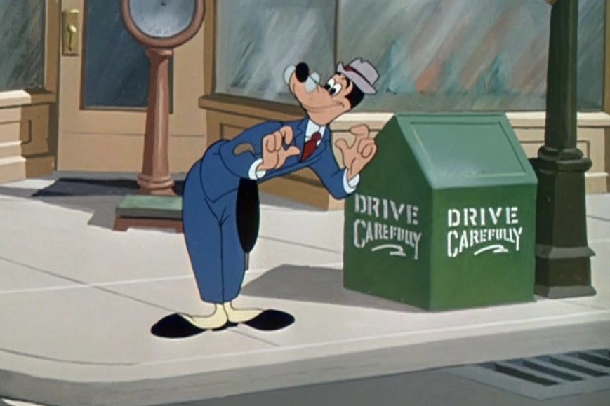
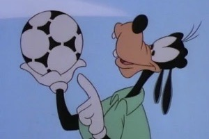
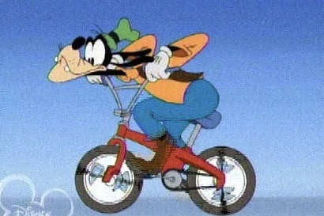

1932
Op 25 mei 1932 ben ik voor het eerst te zien in Mickey's Revue. Ik zit hier in het publiek tijdens een concert van Mickey. De mensen om mij heen irriteren zich ontzettend aan mij omdat ik aldoor heel hard moet lachen en ik ben popcorn aan het eten. Uiteindelijk slaat iemand mij op mijn hoofd.
Ik zie er hier nog heel anders uit, want ik ben een stuk ouder, ik heb een baard en een bril, en ik heb hier een staart. Ook had ik nog een andere naam, namelijk Dippy Dawg.

1932 - 1935
Ik verschijn voor een tweede keer op 17 september 1932. Ik ben een gast op een feest van Mickey Mouse. Verder verschijn ik nog een paar keer tussen 1932 en 1933, maar telkens maar kleine stukjes. Ik zie er hier een stuk jonger uit, ik heb geen baard en bril meer. Verder ben ik niet veel veranderd, ik heb nog steeds een staart.
Op 14 augustus 1934 verschijn ik in Orphan's Benefit met een nieuwe naam, Goofy. Ik word een reguliere lid van de groep samen met Donald Duck en Clara Cluck. Ook krijg ik mijn eigen serie met Mickey en Donald.

1935 - 1940
In 1935 verschijn ik voor het eerst in kleur! Ik heb hier een vrij bleek gezicht, met een beetje slaperige ogen en ik draag witte handschoenen. Ook draag ik voor het eerst een volledige outfit.
Door de serie met Mickey en Donald worden Donald en ik steeds populairder, en Mickey gaat steeds meer naar de achtergrond. Als gevolg hiervan krijgen Donald en ik onze eigen film, Polar Trappers.

1940 - 1942
Ik heb nu vijf vingers in plaats van vier. Ook heeft mijn gezicht een warmere tint gekregen. Verder zie ik er wel ongeveer hetzelfde uit.

1942 - 1949
Ik zie er eigenlijk vrijwel hetzelfde uit als in de periode hiervoor, maar dan met een bruin hoedje. Toch maak ik wel degelijk een verandering door. Mijn stem wordt niet meer ingesproken door Pinto Colvig, wat er voor zorgt dat ik geen stem meer heb. In mijn serie 'How to...' wordt er op de achtergrond verteld, en praat ik nauwelijks meer.

1949 - 1953
Ik heb een nieuw hoedje ontdekt, die niet zoveel lijkt op mijn vorige hoedjes, deze is namelijk rond. Daarbij heb ik ook geen oren meer. Of ik die in mijn hoedje verstop zal niemand ooit weten. Daarnaast zijn mijn ogen een stukje kleiner geworden, en heb ik wenkbrauwen gekregen. Ik draag ook geen handschoenen meer.

1953 - 1999
In deze periode verschijn ik niet heel vaak meer. Ik draag ook niet altijd meer een hoedje, maar als ik er een draag dan is dat altijd een ander, daarom heb ik ze verzameld in deze doos. Mijn gezicht verandert ook af en toe, van bijvoorbeeld grote ogen naar heel klein en dan weer wat groter.

1999 - heden
Vanaf 1999 zie ik eruit zoals je mij waarschijnlijk het beste kent. Ik heb nu een vaste outfit dat bestaat uit een blauwe broek met een oranje shirt. Daar overheen draag ik een bruin vest, en met als kers op de taart mijn groene hoed.
